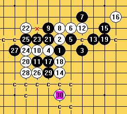

白先VCT胜
#1 白先VCT胜 作者：快乐天羽 发表时间：2009-4-29 15:59:43
=======上图对应的爱五子棋谱代码如下，以便你拆解：========
h8h9j8g8i9i10j11h10g10f8f7j10k9h6l10m11g7h7l9e7g9e10f9e8e9
======================================================
［ 五子痴 于 2009-4-29 17:07:28 时花20金币送鲜花一朵］
［ 游戏人间 于 2009-5-16 17:04:13 时奖励此帖[金币加 20 威望加1］
#2 Re:白先VCT胜 作者：快乐天羽 发表时间：2009-4-29 16:27:43
TAPE要是有好的VCT，可以多发几个上来，大家做做，练习下计算。#3 Re:白先VCT胜 作者：五子痴 发表时间：2009-4-29 16:58:36
 很精彩
很精彩
#4 Re:白先VCT胜 作者：不知 发表时间：2009-4-29 20:06:38
 看到痴大叔换头象了
看到痴大叔换头象了
#5 Re:白先VCT胜 作者：慎独 发表时间：2009-4-29 20:20:24
#6 Re:白先VCT胜 作者：快乐天羽 发表时间：2009-5-16 16:49:35
我这段时间进不来爱五子网。有一周多没来了。7楼的答案是正确的，这个找VCT并不是很难，但这个黑的变化，我记得是黑石的走法，结果是白VCT胜出。所以我把这个题目发这里，大家看看。#7 Re:白先VCT胜 作者：岳麓小棋后 发表时间：2009-5-16 16:54:29
话说这个白10是黑石的定，我想问下，为什么黑石选择这个白10定，而不走流浪者的梦那个定10，难不成这个10手更难杀吗，TYLS！！！#8 Re:白先VCT胜 作者：快乐天羽 发表时间：2009-5-16 16:58:53
这个10，是金星里，比较难杀的一个。流浪的梦，是因为大家都比较关注，而且很长一段时间没达到黑必胜，才被大家认为是最难的，其实那个不难的，只是当时大家的研究工具不强，甚至当时没工具的时候才被认为很强的。简单说，那个一点都不难，所谓的流浪的梦，最少有2套方法可以黑胜。
另外，这个10手，黑石有写不识别，但加上个人因素后，这个10，杀起来也不难的。工具毕竟是死的，很多时候有弊端，所以黑石确认这个点是最强的。
#9 Re:白先VCT胜 作者：快乐天羽 发表时间：2009-5-16 16:59:53
补充：尤其是当局面变复杂后，或者是可能给黑造成禁手的局面出现，黑石很难识别。［ 游戏人间 于 2009-5-16 17:04:35 时奖励此帖[金币加 20 威望加1］
#10 Re:白先VCT胜 作者：岳麓小棋后 发表时间：2009-5-16 17:04:44
恩，流浪者的梦确实有至少2套胜法，那梦外围黑压压都是黑的，印象最深刻的就是间一子排列的那几个子哈哈，好壮观卫士
#11 Re:白先VCT胜 作者：辽宁棋子 发表时间：2009-6-8 19:58:49
拜读
#12 Re:白先VCT胜 作者：流逝 发表时间：2009-6-9 14:16:31
 弱弱的问一句 流浪的梦是啥玩意
弱弱的问一句 流浪的梦是啥玩意
#13 Re:白先VCT胜 作者：海湾浪琴 发表时间：2011-1-31 21:24:33
一个长定式，黑杀